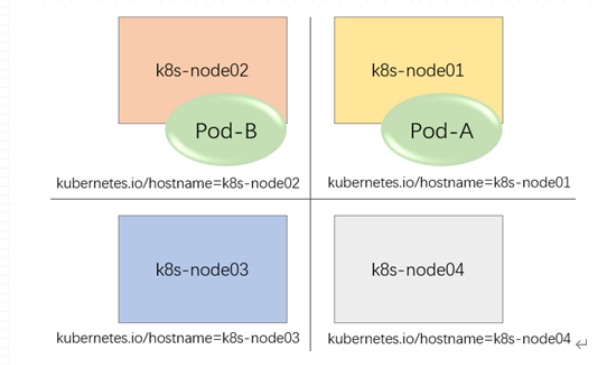
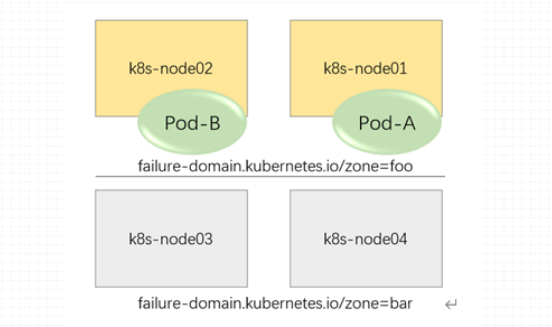

Pod亲和调度与节点亲和很相像，所谓节点亲和是用来怕判定pod对节点的倾向性的。
Pod亲和就是Pod彼此之间运行于同一位置的倾向性；如果两个pod之间是亲和的那就意味着两个pod运行在同一位置的倾向性。
所谓同一位置可以是同一节点、同一机架、同一排机架(row)，同一个机房间(room)，同一IDC。
反亲和能实现节点级、机架级、甚至机房级别的冗余。
亲和能实现的是同一机架内的pod间通信速度能更快。
k8s中位置的定义 在k8s上定义位置就是在节点上选定一个节点标签或拓扑标签，作为位置判定逻辑时，具有同一标签值的就是同一位置，具有不同标签值的就是不同位置。

上图中以hostname为位置标签，那就表示以节点来区分位置

上图以domain，区域作为标签，那么就以区域来区分位置。如果pod-a和pod-b是亲和的那么他们将分布在同一区域内，如果反亲和，那么他们将会被分布在不同的区域内。
Pod的亲和 pod间也存在硬亲和和软亲和的关系，硬亲和则表示两个pod必须运行在同一个位置，而软亲和则是尽量满足运行在同一位置。
Pod亲和定义 1 2 3 4 5 6 7 8 9 10 11 spec: affinity: podAffinity: preferredDuringSchedulingIgnoredDuringExecution: - podAffinityTerm weight requiredDuringSchedulingIgnoredDuringExecution: - labelSelector: namespaceSelector: namsepace: topologyKey:
pod硬亲和示例 1.编写资源清单示例
1 2 3 4 5 6 7 8 9 10 11 12 13 14 15 16 17 18 19 20 21 22 23 24 25 26 27 28 29 30 31 32 33 34 35 36 37 38 39 40 41 42 43 44 45 46 47 48 root@k8s-master01:~/yaml/chapter11 apiVersion: apps/v1 kind: Deployment metadata: name: redis spec: replicas: 1 selector: matchLabels: app: redis ctlr: redis template: metadata: labels: app: redis ctlr: redis spec: containers: - name: redis image: redis:6.0-alpine --- apiVersion: apps/v1 kind: Deployment metadata: name: pod-affinity-required spec: replicas: 5 selector: matchLabels: app: demoapp ctlr: pod-affinity-required template: metadata: labels: app: demoapp ctlr: pod-affinity-required spec: containers: - name: demoapp image: ikubernetes/demoapp:v1.0 affinity: podAffinity: requiredDuringSchedulingIgnoredDuringExecution: - labelSelector: matchExpressions: - {key: app, operator: In, values: ["redis" ]} - {key: ctlr, operator: In, values: ["redis" ]} topologyKey: rack
2.对个节点打标签
1 2 3 4 5 6 root@k8s-master01:~/yaml/chapter11 node/k8s-node01 labeled root@k8s-master01:~/yaml/chapter11 node/k8s-node02 labeled root@k8s-master01:~/yaml/chapter11 node/k8s-node03 labeled
3.应用资源清单
1 2 3 root@k8s-master01:~/yaml/chapter11 deployment.apps/redis created deployment.apps/pod-affinity-required created
4.查看pod运行状态
1 2 3 4 5 6 7 8 9 10 root@k8s-master01:~/yaml/chapter11 NAME READY STATUS RESTARTS AGE IP NODE NOMINATED NODE READINESS GATES pod-affinity-required-776d6948f9-5r827 1/1 Running 0 9s 192.168.96.25 k8s-node02 <none> <none> pod-affinity-required-776d6948f9-mthcc 1/1 Running 0 14s 192.168.96.24 k8s-node02 <none> <none> pod-affinity-required-776d6948f9-q6fzq 1/1 Running 0 14s 192.168.96.22 k8s-node02 <none> <none> pod-affinity-required-776d6948f9-rhs6h 1/1 Running 0 8s 192.168.96.26 k8s-node02 <none> <none> pod-affinity-required-776d6948f9-s4pmd 1/1 Running 0 14s 192.168.96.23 k8s-node02 <none> <none> redis-55f46d9795-zsqp9 1/1 Running 0 28m 192.168.96.11 k8s-node02 <none> <none>
pod软亲和示例 1.编辑资源清单
1 2 3 4 5 6 7 8 9 10 11 12 13 14 15 16 17 18 19 20 21 22 23 24 25 26 27 28 29 30 31 32 33 34 35 36 37 38 39 40 41 42 43 44 45 46 47 48 49 50 51 52 53 54 55 56 57 58 59 60 61 62 63 64 65 66 67 68 apiVersion: apps/v1 kind: Deployment metadata: name: redis-preferred spec: replicas: 1 selector: matchLabels: app: redis ctlr: redis-preferred template: metadata: labels: app: redis ctlr: redis-preferred spec: containers: - name: redis image: redis:6.0-alpine resources: requests: cpu: 500m memory: 512Mi --- apiVersion: apps/v1 kind: Deployment metadata: name: pod-affinity-preferred spec: replicas: 4 selector: matchLabels: app: demoapp ctlr: pod-affinity-preferred template: metadata: labels: app: demoapp ctlr: pod-affinity-preferred spec: containers: - name: demoapp image: ikubernetes/demoapp:v1.0 resources: requests: cpu: 1500m memory: 1Gi affinity: podAffinity: preferredDuringSchedulingIgnoredDuringExecution: - weight: 100 podAffinityTerm: labelSelector: matchExpressions: - {key: app, operator: In, values: ["redis" ]} - {key: ctlr, operator: In, values: ["redis-preferred" ]} topologyKey: kubernetes.io/hostname - weight: 50 podAffinityTerm: labelSelector: matchExpressions: - {key: app, operator: In, values: ["redis" ]} - {key: ctlr, operator: In, values: ["redis-preferred" ]} topologyKey: rack
2.应用资源清单
1 2 3 root@k8s-master01:~/yaml/chapter11 deployment.apps/redis-preferred created deployment.apps/pod-affinity-preferred created
3.查看pod调度结果
1 2 3 4 5 6 7 8 9 10 root@k8s-master01:~/yaml/chapter11 NAME READY STATUS RESTARTS AGE IP NODE NOMINATED NODE READINESS GATES pod-affinity-preferred-5dcfdf44c5-9jlkl 1/1 Running 0 101s 192.168.30.13 k8s-node03 <none> <none> pod-affinity-preferred-5dcfdf44c5-jwqf2 1/1 Running 0 101s 192.168.131.15 k8s-node01 <none> <none> pod-affinity-preferred-5dcfdf44c5-k42xh 1/1 Running 0 101s 192.168.96.27 k8s-node02 <none> <none> pod-affinity-preferred-5dcfdf44c5-lcbwz 1/1 Running 0 101s 192.168.96.28 k8s-node02 <none> <none> redis-preferred-56c75b8669-98q6j 1/1 Running 0 17s 192.168.96.29 k8s-node02 <none> <none>
pod反亲和示例 1.编辑资源清单
1 2 3 4 5 6 7 8 9 10 11 12 13 14 15 16 17 18 19 20 21 22 23 24 25 26 27 28 root@k8s-master01:~/yaml/chapter11 apiVersion: apps/v1 kind: Deployment metadata: name: pod-antiaffinity-required spec: replicas: 4 selector: matchLabels: app: demoapp ctlr: pod-antiaffinity-required template: metadata: labels: app: demoapp ctlr: pod-antiaffinity-required spec: containers: - name: demoapp image: ikubernetes/demoapp:v1.0 affinity: podAntiAffinity: requiredDuringSchedulingIgnoredDuringExecution: - labelSelector: matchExpressions: - {key: app, operator: In, values: ["demoapp" ]} - {key: ctrl, operator: In, values: ["pod-antiaffinity-required" ]} topologyKey: kubernetes.io/hostname
2.应用资源清单
1 2 root@k8s-master01:~/yaml/chapter11 deployment.apps/pod-antiaffinity-required created
3.查看pod调度
1 2 3 4 5 6 7 8 root@k8s-master01:~/yaml/chapter11 NAME READY STATUS RESTARTS AGE IP NODE NOMINATED NODE READINESS GATES pod-antiaffinity-required-645c87f57d-8jwsl 1/1 Running 0 17s 192.168.30.19 k8s-node03 <none> <none> pod-antiaffinity-required-645c87f57d-ncmct 1/1 Running 0 17s 192.168.131.21 k8s-node01 <none> <none> pod-antiaffinity-required-645c87f57d-njnjg 0/1 Pending 0 17s <none> <none> <none> <none> pod-antiaffinity-required-645c87f57d-q4jxq 1/1 Running 0 17s 192.168.96.32 k8s-node02 <none> <none>